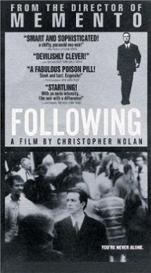
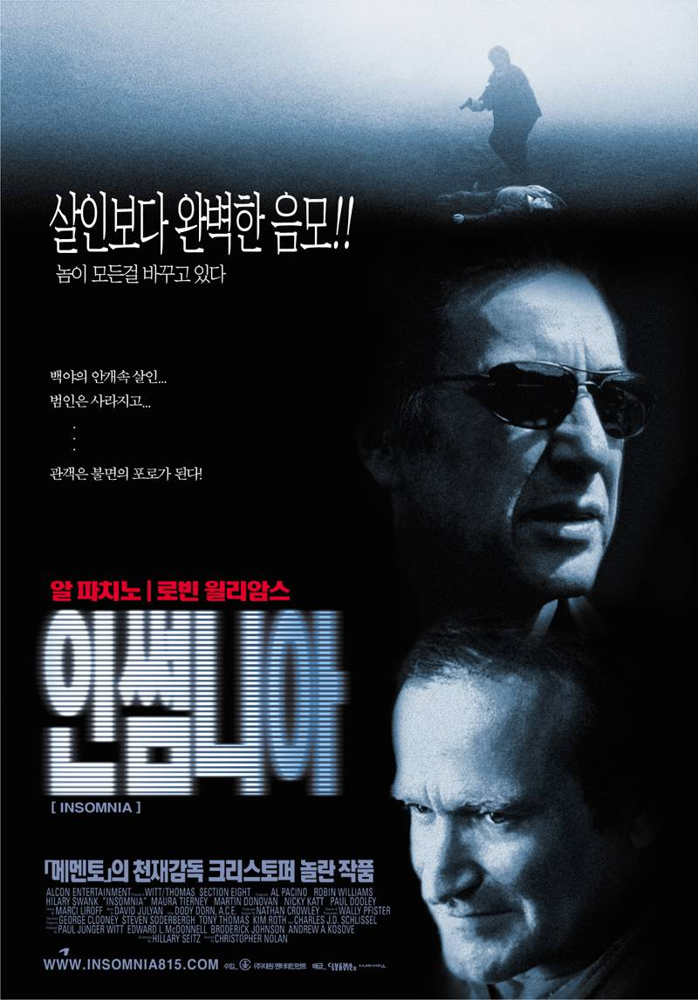
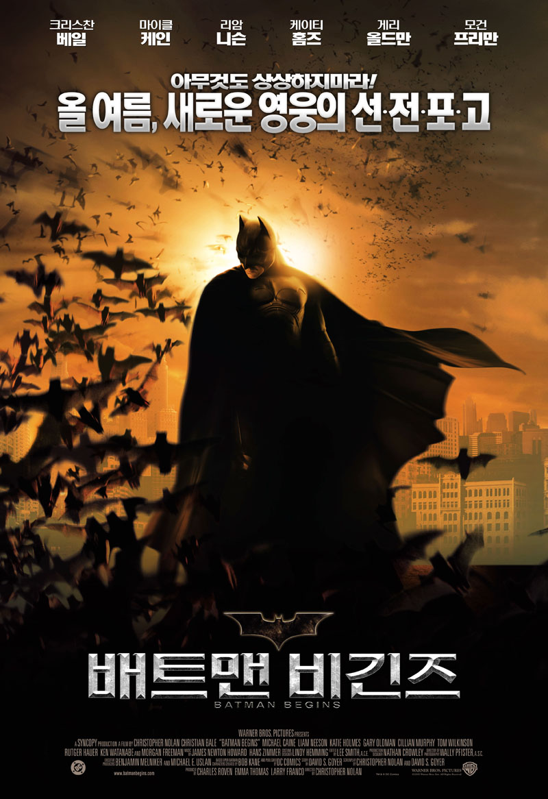
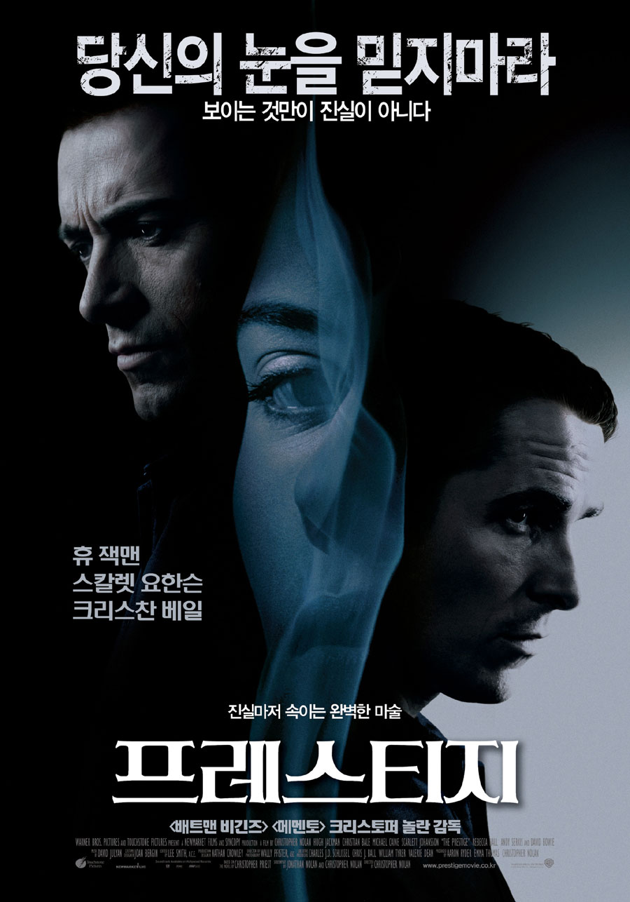
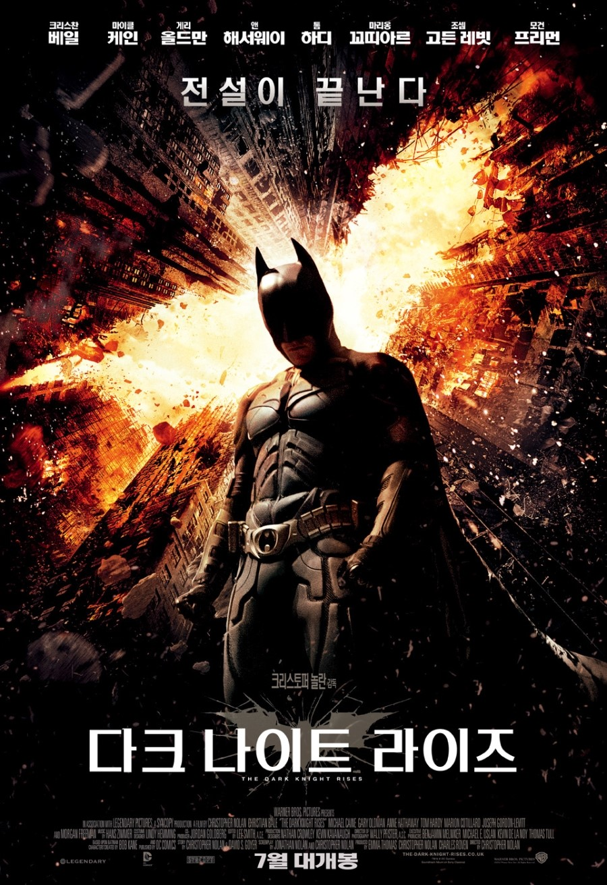

필모그래피

미행(following.1998)

메멘토(Memento.2000)

인썸니아(Insomnia.2002)

배트맨 비긴즈(Batman Begins.2005)

프레스티지(The Prestige.2006)

다크 나이트(The Dark Knight.2008)

인셉션(Inception.2010)

다크 나이트 라이즈(The Dark Knight Rises.2012)

인터스텔라(Interstellar.2014)
덩케르크(Dunkirk.2017)
| 킬리언 머피(Cillian Murphy) | 톰 하디(Tom Hardy) | 마이클 케인(Michael Caine) | |
|---|---|---|---|
| 국적 | 아일랜드 | 영국 | 영국 |
| 나이 | 1976년 5월 25일 | 1977년 9월 15일 | 1933년 3월 14일 |
| 함께한 작품 | 5개 | 3개 | 5개 |